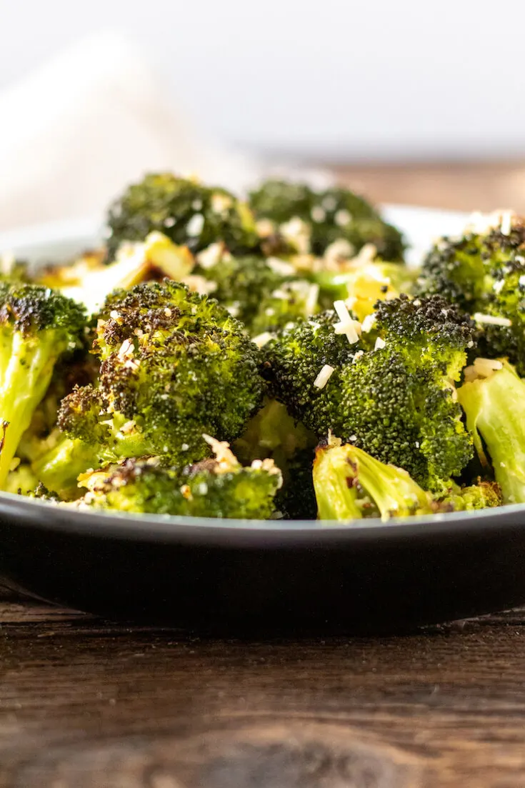

Description
Lemon Garlic Roasted Broccoli with Parmesan is a simple yet flavorful dish made with broccoli florets roasted
in the oven with olive oil, garlic, lemon juice, and Parmesan cheese.
Ingredients
- 1 head of broccoli, cut into florets
- 2 tablespoons olive oil
- 2 cloves garlic, minced
- 1/2 teaspoon salt
- 1/4 teaspoon black pepper
- 1/4 cup grated Parmesan cheese
- 1 tablespoon lemon juice
Steps
- Preheat oven to 425°F (220°C)
- Toss the broccoli florets with olive oil, garlic, salt, and pepper in a large bowl
- Spread the broccoli florets in a single layer on a baking sheet
- Roast for 20-25 minutes, or until the broccoli is tender and slightly browned
- Remove from the oven and toss with Parmesan cheese and lemon juice
- Serve immediately
return to top
return to main